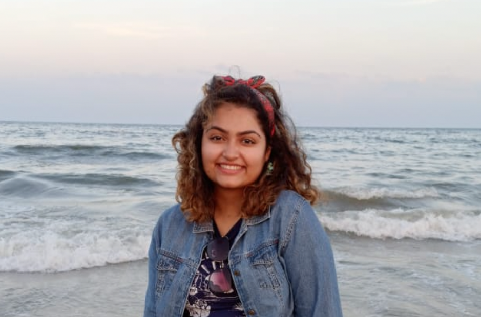

I am a senior at a well known engineering college in New Delhi, India pursuing a degree in computer science. I am deeply passionate about the field of artificial intelligence and am currently looking to pursue full time graduate studies in the discipline. I decided to found meraki lab with a vision to create technology using AI and other stacks that is capable of making real-life impacts. Although I have been inventing my whole life, my first real gig as an innovator came in the form of PINACC, the women's security provision. It was all uphill from there. Since, deveoping PINACC, Meraki lab has gone on to undertake multiple other projects. We have worked in collaboration with other firms and have had a number of patrons who've helped us develop and intellectually protect our products.

I was born into a family of hardworking and sensitive individuals most of whom have spent their life doing pro-bono work. Thus, giving back to the community has been ingrained into me from the very beginning. I am driven by the desire to do work that helps those around me and this is what predominantly governs my work and research projects. My career objective is to explore Machine Learning and Deep Learning technologies and to apply these to gaps in healthcare and physical interactions.